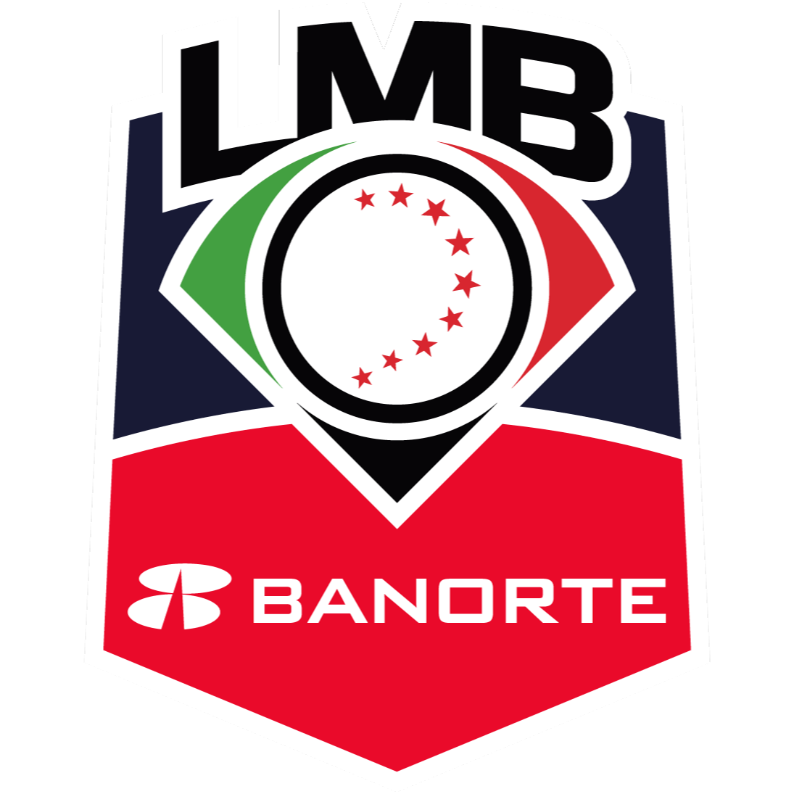

Temporada 2026Ingresa tu correo y te enviaremos un enlace para restablecer tu contraseña.
Posiciones · División Norte & Sur
Cargando líder de la liga.
Resumen estadístico · Temporada 2026
Mejor equipo
PCT más alto de liga
Más victorias
Temporada regular 2026
Mejor porcentaje
Record en casa
Mejor racha activa
Racha ganadora
Posiciones · Temporada 2026
Cargando equipos
La carrera al título
Guía de posiciones LMB
La Liga Mexicana de Beisbol se juega con equipos agrupados en Zona Norte y Zona Sur. Durante la temporada regular, cada victoria, derrota y racha modifica el panorama competitivo de la liga. La columna de juegos ganados muestra el avance directo de cada club, mientras que las derrotas ayudan a medir el margen de error disponible en la pelea por los primeros lugares. El porcentaje de victoria resume el rendimiento total y permite comparar equipos aunque tengan distinto número de juegos disputados.
Las rachas son útiles para entender el momento actual de cada equipo. Una racha ganadora puede indicar buena forma ofensiva, estabilidad del pitcheo o una defensa más consistente. Una racha perdedora, por el contrario, puede revelar ajustes pendientes antes de una serie importante. Tambien es importante observar el desempeño en casa, fuera de casa y en los últimos diez juegos, porque esos datos ofrecen una lectura más completa que el récord general.
Esta landing concentra la información esencial para seguir la temporada 2026 de la LMB: posiciones por división, líderes de la liga, equipos con mejor porcentaje, clubes con más victorias y detalles individuales por equipo. El objetivo es presentar una lectura rápida y clara del estado de la competencia, con datos actualizados desde el servicio de posiciones y una experiencia optimizada para escritorio, tablet y móvil.